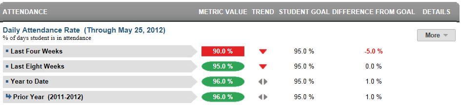
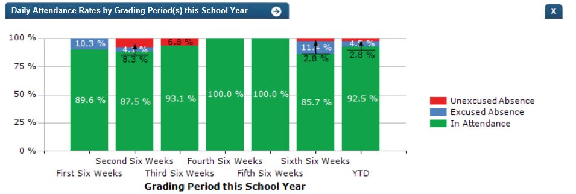
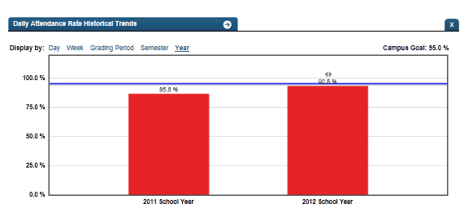

Dashboard Metrics


Daily Attendance Rate
Background
Student Dashboard Metrics
Because of the value of attendance as a key leading indicator of student performance, virtually every performance management dashboard should include a measure of student attendance. This need was echoed in focus groups conducted with educators, in which attendance was consistently named as one of the top three student data needs. Further, the Daily Attendance Rate metric, as presented in screen shots of the student dashboard, was considered useful by 99% of those surveyed.
Primary Metric
- Daily Attendance Rate: the percent of days a student is in attendance during the last four weeks, last eight weeks and the entire year to date, with comparison to campus goals for each.
Related Metric
- Class Period Absence Rate: the percent of class periods a student is in attendance during the last four weeks, last eight weeks and the entire year to date, with comparison to campus goals for each.
User Interface
Dashboard Example
Figure 1 shows the Daily Attendance Rate metric as seen on the student dashboard.

Figure 1 Ed-Fi Daily Attendance Rate Metric
Status Definition
The Status Indicator is determined by campus-specific thresholds (campus goals) which are set at the district level. The default attendance threshold for each time frame is 90%.
Table 2 lists the status indicators and trend comparisons as seen on the student dashboard.
Metric Indicator | Trend Comparisons | |||
Metric Name | Sub-metric Name | Metric Status Indicator | Compares: | To: |
Daily Attendance Rate | Last Four Weeks | Green (Percentage) = if Daily Attendance Rate is greater than or equal to campus goal Red (Percentage) = if Daily Attendance Rate is less than campus goal | Begins 40 days into school year. Last four weeks (20 instructional days) no overlap in dates | Prior four weeks (20 instructional days) |
Last Eight Weeks | Green (Percentage) = if Daily Attendance Rate is greater than or equal to campus goal Red (Percentage) = if Daily Attendance Rate is less than campus goal | Begins 80 days into school year. Last eight weeks (40 instructional days) no overlap in dates | Prior eight weeks (40 instructional days) | |
Year to Date | Green (Percentage) = if Daily Attendance Rate is greater than or equal to campus goal Red (Percentage) = if Daily Attendance Rate is less than campus goal | Year to Date(after first 10 instructional days) | Prior year year to date attendance. | |
(a) The Value column displays the total number of days the student is absent.
Trend Definition
Table 3 lists the trend indicators for the Daily Attendance Rate metric.
Trend Indicators: Objective is to indicate Daily Attendance Rate | |||
| Up green | If the value for the current time frame is more than 5 percentage points higher than the prior time frame. | |
| Unchanged | If the value for the current time frame is less than or equal to 5 percent higher or less than or equal to 5 percent lower than the prior time frame, then display two gray arrows pointing outward indicating no direction. | |
| Down red | If the value for the current time frame is more than 5 percentage points lower than the prior time frame. | |
The trend does not display for the first occurrence of a time frame since data is not available.
Periodicity
Best practice is to load the data for this metric daily.
Recommended Load Characteristics | |
Calendar | Throughout the school year |
Frequency of data load | Daily, Weekly, Monthly |
Latency | 4 weeks |
Interchange schema | Interchange-StudentAttendance.xsd |
Tooltips
The standard tool tips for the metric definition, column headers, and help functions display for this metric.
The following are tooltips specific to the Daily Attendance Rate metric:
 is ‘No change from the prior period'
is ‘No change from the prior period' is ‘Getting worse from the prior period'
is ‘Getting worse from the prior period' is ‘Getting better from the prior period'
is ‘Getting better from the prior period'
Business Rules
The Daily Attendance Rate metric displays the percentage of instructional days a student is in attendance for the following time frames:
- Last Four Weeks
- Last Eight Weeks
- Year to Date
Middle and high schools typically designate a specific time frame on which to base daily attendance. This daily attendance metric is computed based upon that campus-specific business rule to interpret class (section) attendance data.
The length of the time frames is configurable and is defined by the district.
Data Assumptions
- Campus must record student absences at the classroom level for each time frame.
- The class or period when daily attendance is counted must be specified.
- Student absences are categorized (excused, unexcused).
- Student excused absence reasons are recorded.
- District sets the value that drives the campus and student status thresholds.
Computed Values
Table 5 defines how values are calculated for each subject. The result of the calculation displays in the Status column on the student dashboard.
Metric Values | ||
Daily Attendance Rate | Last Four Weeks | Days in Attendance = (total number of instructional days in 20 academic days) - (total number of student excused absences + total number of student unexcused absences) Percentage Last Four Weeks = (Days in Attendance / total number of instructional days in last 20 academic days) * 100 |
Last Eight Weeks | Days in Attendance = (total number of instruction days in 40 academic days) - (total number of student excused absences + total number of student unexcused absences) Percentage Last Eight Weeks = (Days in Attendance / total number of instruction days in last 40 academic days) * 100 | |
Year to Date | Days in Attendance = (total number of instructional days for the entire school year) - (total number of student excused absences + total number of student unexcused absences) Percentage Year to Date = (Days in Attendance / total number of instructional days in entire school year) * 100 | |
Calculation Notes
- For students not enrolled for some number of days, subtract those days from the “Total Number of Instructional Days” in both the numerator and the denominator.
- A day of attendance is computed from attendance in a specified class (section), homeroom, or period.
- Both excused and unexcused absences are subtracted from total instructional days.
- A tardy or early release (if captured) is not counted as an absence.
Data Anomalies
Anomalies
Metrics are sensitive to when and how often the data is loaded.
The granular time periods (daily, weekly) do not necessarily appear to align with the four and eight week metric level data. This is because the more granular periods are calculating a smaller sample size.
Late enrollees are likely to be missing attendance data, but the calculation for daily attendance rate is not dynamic. Students are assumed to have been present all the days prior to enrollment.
Similarly, if a student withdraws and re-enrolls, there is no way to account for this in the daily attendance rate container view. The attendance metrics account for their attendance from the most recent enrollment date however their detail views of Daily Attendance, Tardy and Class Period Absence rate will show the full history.
Infants and toddlers most likely do not have data to support this metric.
Early education and Pre-Kindergarten students with attendance data will display student daily attendance rate on the student page; these students will also be included in the campus and district rollup of daily attendance rate.
If the school calendar changes, then adjust the denominator to reflect eligible days.
Best practice is to use footnotes to address these anomalies.
Footnotes
Footnotes are used to provide additional data information concerning the metric. Footnotes are sequential for the entire page. Therefore, a metric's footnote may not begin with the number 1.
Date of Refresh
Best practice is for the date of last data refresh to appear next the metric in the following format:
- (Through April 22, 2010)
Implementation Considerations
Designation of Campus Rule for Daily Attendance
Middle and high schools typically designate a specific time frame or class period on which to base daily attendance. This campus-specific business rule needs to be captured in order to properly interpret daily attendance from section attendance data.
Attendance and Grade Metrics for Elementary School
The Ed-Fi dashboards use a student's assignment to formal class periods to determine both attendance and grades. Most elementary schools do not have a standard methodology for capturing attendance data. A teacher may take attendance in the classroom, but not formally record it. The same is true for grades, especially in kindergarten and first grade. In most cases, Ed-Fi metrics will not display attendance data for these grade levels and grades may not display in the metrics until the end of the year, if at all.
Late enrollments
For late enrollment students, the number of instructional days requires adjustment. Specifically, subtract the days the student was not enrolled from the number of instructional days in the time frame (e.g., last four weeks, last eight weeks or year-to-date).
Classification of Days as Non-Instructional Days
For the computation of the number of instructional days, use either the total count of instructional days in a time frame or the school calendar to identify specific instructional days for the time frame as the denominator for the percentage. The latter is a more accurate approach to calculating the metric with the caveat that this requires frequent uploading of data throughout the school year.
Types of Absences
It is important to determine what your Student Information System (SIS) captures for the absence types and absence reasons. The type of absences, also known as Attendance Event Descriptor, captured in the SIS consists of tardy, excused or unexcused absences.
For example, the default for this metric uses excused and unexcused absences. The reason for excused absences is displayed (see Drill Down section). Tardy occurrences are measured as a separate metric.
Students with No Absences
When taking roll at the classroom level, campuses typically record student absences, but do not record if a student is present in a class. The query to compute student absences needs to account for students with null absences, which is the result of perfect attendance.
Frequency of Uploading Data
The metric computation implementation may vary depending on the periodicity of loading the data. For example, a daily load requires that you load data for only a single day (i.e., the last instructional day). Less frequent uploads require that you load data for each day since the date of the last load.
Length of Time Frames
The choice of four and eight weeks and year to date in the Ed-Fi dashboards is based on educator input, but the length of each time frame is configurable at the district level.
Thresholds
Best practice is to set the thresholds for each campus at the district level. A secure mechanism is required to allow the district to set and maintain those thresholds.
Database Table Scalability
Daily attendance is one of the largest student datasets to maintain. To limit the size of daily attendance, developers may decide to include only the current year’s data.
To aid in planning for dataset management, one benchmark from the Ed-Fi dashboards load testing is that the daily attendance data for roughly 48,500 students for half of the school year required 8.3 million rows, or approximately 171 rows per student.
Drill Downs
Drill Down View
The dashboards include the option to drill down and see more detail that is associated with a metric. Table 6 lists the drill down view that is recommended for this metric.
| Academic Profile | Basic academic history of student data that gives educators access to a student's strengths and areas of improvement. (Future Implementation) | |
| Detail | Graph of metric values by grading period of current school year. | |
| Historical | Graph of metric values by daily, weekly, grading period, semester, and yearly time periods. |
Description
This drill down displays a graph of a student’s attendance and excused and unexcused absences for the last four weeks, eight weeks and year to date for the current school year.
User Interface Notes
Dashboard Example
Figure 2 shows another option for the Daily the Attendance Rate Detail metric.

Figure 3 Ed-Fi Daily Attendance Rate Detail
Figure 3 shows one option for the Historical Graph.

Figure 4 Ed-Fi Historical Daily Attendance Rate
Drill Down Tooltips
- The percentage of attendance, excused and unexcused absences is shown as an educator hovers over a specific time frame bar of the graph as shown in Figure 2.
Drill Down Footnotes
There are no additional footnotes for the Daily Attendance Rate Detail.
Business Rules
The Daily Attendance Rate detail shows percentages for attendance, unexcused and excused absences for time frame for the current school year. Each column is labeled with its time frame. The vertical axis is percentage.
In Attendance is displayed as green. Excused absences are displayed in blue. Unexcused absences are displayed in red.
The Historical Graph allows the user to see historical data across multiple timeframes. As time passes, there are many bars to be displayed; therefore, the slider on the bottom allows the user to adjust the number of bars displayed as well as the time period shown. The timeframes for this metric were chosen based on educator feedback.